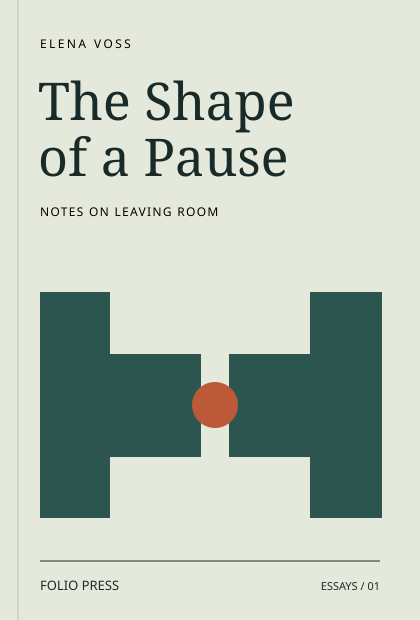
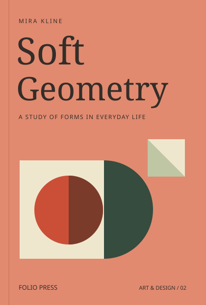
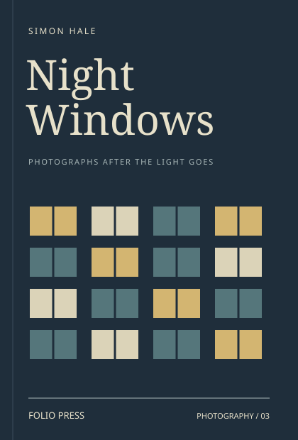
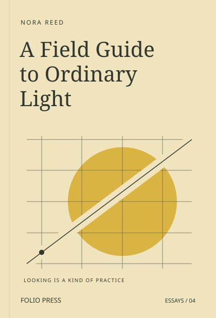
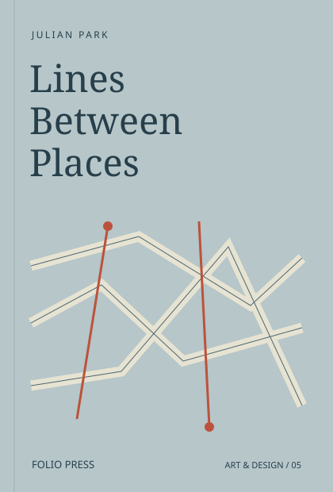
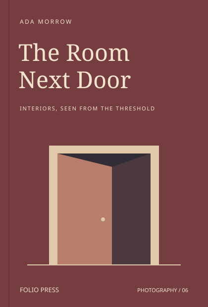

Books for a closer look
Art, photography and essays from a small independent press. Made to be returned to.
Browse the catalogue
Soft Geometry

Night Windows
From the current shelf · Paperback prices in USDInside Soft Geometry
The catalogue
Six books · Available as paperback or hardback
The Shape of a Pause
Essays on the gaps between objects, sentences and daily routines, with small exercises in leaving room.
View book $28.00 paperback
Soft Geometry
Drawings of paper bags, chair backs and folded objects, paired with essays on how use changes a shape.
View book $36.00 paperback
Night Windows
An imagined photographic sequence of lit windows after dusk, accompanied by notes on framing and distance.
View book $32.00 paperback

A Field Guide to Ordinary Light
Short essays and repeatable looking exercises: a wall, a reflection and a shadow revisited as the light changes.
View book $24.00 paperback

Lines Between Places
Route drawings and notebook essays that compare a measured journey with the places attention remembers.
View book $40.00 paperback

The Room Next Door
An imagined photographic study of interiors from the doorway, with notes on the traces of everyday occupation.
View book $30.00 paperback
A place for the overlooked
A window after dusk. The edge of a room. A shape you pass every day. Folio brings art, photography and writing together around the pleasure of paying attention.
This is an imagined independent press. These six original book identities form a self-contained sample catalogue; you can explore them and keep a selection in your sample bag.